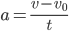

Механика - это раздел физики, который изучает движение тел и причины его изменения.
Она включает в себя такие темы, как кинематика, динамика, механика твердого тела, механика жидкостей и газов.
В механике рассматриваются законы движения, силы, энергия и другие физические величины, которые описывают движение тел в пространстве и времени.
Какие разделы Механики существуют?
Механика в физике включает в себя несколько разделов:
1. Кинематика - изучает движение тел без рассмотрения причин, вызывающих это движение. Кинематика описывает перемещение тела, скорость и ускорение, а также другие параметры движения.
2. Динамика- изучает движение тел с учетом причин, вызывающих его изменение. Динамика рассматривает взаимодействие тел между собой и силы, действующие на них. Она описывает, как сила влияет на движение тела и как изменение движения тела влияет на силу.
3. Статика - изучает тела в состоянии покоя или равновесия. В статике изучаются такие явления, как равнодействующая сил, момент силы и условия равновесия.
Все эти разделы механики описывают движение материальных тел в пространстве и времени и являются основой для понимания многих явлений в физике.
Кинематика - это раздел механики, который изучает движение тел без рассмотрения причин, вызывающих это движение.
Она описывает перемещение тела, скорость и ускорение, а также другие параметры движения.
Кинематика не рассматривает силы, действующие на тело, и не объясняет, что вызывает движение тела. Она лишь описывает, какое движение совершает тело в пространстве и времени.
Кинематика играет важную роль в физике, так как она является основой для более сложных разделов механики, таких как динамика и механика твердого тела.
Основные формулы
.png)
.png)
.png)
.png)

Динамика - это раздел механики, который изучает движение тела и его причины.
Она описывает, как силы воздействуют на тело и как эти силы влияют на его движение.
Динамика изучает законы Ньютона, которые описывают, как тела реагируют на воздействие силы и как они изменяют свое движение под воздействием этих сил.
Также динамика занимается изучением законов сохранения энергии, импульса и момента импульса.
Динамика играет важную роль в физике, так как она позволяет объяснить, какие силы воздействуют на тело и почему оно движется именно так, а не иначе.
Основные формулы
.png)
.png)
.png)
.png)
.png)
Статика - это раздел механики, который изучает тела в состоянии покоя или равновесия.
В статике изучаются такие явления, как равнодействующая сил, момент силы и условия равновесия.
Равновесие может быть статическим, когда тело находится в состоянии покоя, или динамическим, когда тело движется с постоянной скоростью.
При изучении статики рассматриваются такие величины, как сила, масса, момент, давление и другие.
Основные формулы
.png)
.png)
.png)
.png)
.png)